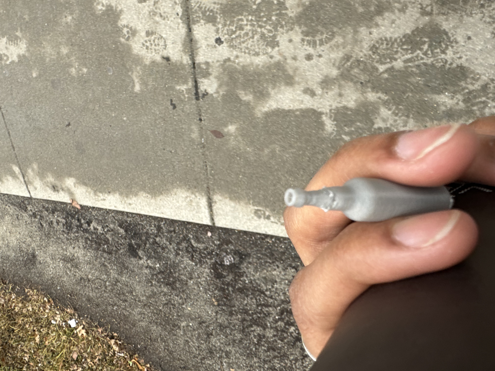
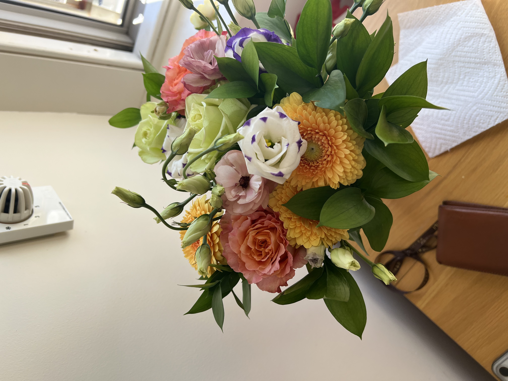

3D Print

For the print assignment, I wanted to print something with a bunch of curves and overhanging features—like a bottle.Tiny Bottle
(download stl file for the bottle
(download gcode for print)
I watched a youtube tutorial on glass bottle designing. I remade the bottle from a few weeks ago. I sliced and realized making a bottle to scale would take a while to print. Moreover, that seemed boring and overdone, so I thought it would be both easier and funnier to print a tiny bottle. I scaled it in prusa slicer to be 1.5 inches tall. It’s so tiny I lost it, so I wasn’t able to take a better picture besides this one, taken on the run.
3D Scan

My friends got me some flowers for my birthday. I thought I would try to do a 3D scan of them. I had to adjust the lighting and the surface that the bottle rested on to improve the scan, but it still refused to accept some key details and improperly projected some perspectives. This is possibly because I had to crane my arm around and couldn't get the best angle from my desk.I wanted to use an iPhone app to do it. I was turned off by the paywall on Polycam. Thus, I surfed on Reddit and came across Scaniverse, from the same people who made Pokemon Go (niantic labs). Super free and you can export to any model/mp4/choose your file type). Moreover, there’s a very intuitive UI. You adjust your LIDAR range (from 0.3m to 5.0m) just pan a video around your object (or room, or neighborhood block). Wherever there is incomplete scanning, a red patch pups up letting you know to scan some more.
I wanted to play with the LIDAR ranges, so for the next scan I did my room and common room!
Final Project Update
Materials
- 3D printed number tiles (probably at least 2 of each digit 0-9)
- 3D printed math operation tiles (probably just + and - but maybe also multiplication)
- Main box most likely made of something like wood
- Microcontroller minis for each number tile and operation tile soldered to make them like ID tags for each tile
- Arduino board (or some other device to detect minis tags) to put inside of main box
- Mechanism to indicate correct or incorrect equation (maybe incorporate toast...maybe not)
- (Use magnetic field sensors to detect spot placement of number tiles?)
Timeline
- (Week 5 3D model of final project)
- Week 6: use magnetic field sensors for weekly assignment in case they could be useful for final project; 3D print new version of number boxes
- Week 7: work on microcontroller minis (with Bobby) and try to get ID tags working
- (I think that the rest of the timeline will depend on if the minis work or not, but I think the order of things to work on after the minis will be to work on the coding for the project and get the electronics part working before finishing the actual main box part. I will probably be 3D printing number pieces throughout.)